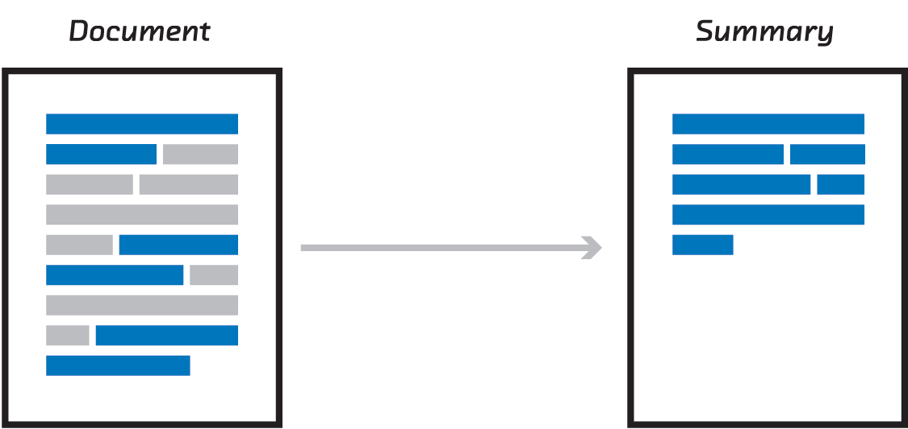
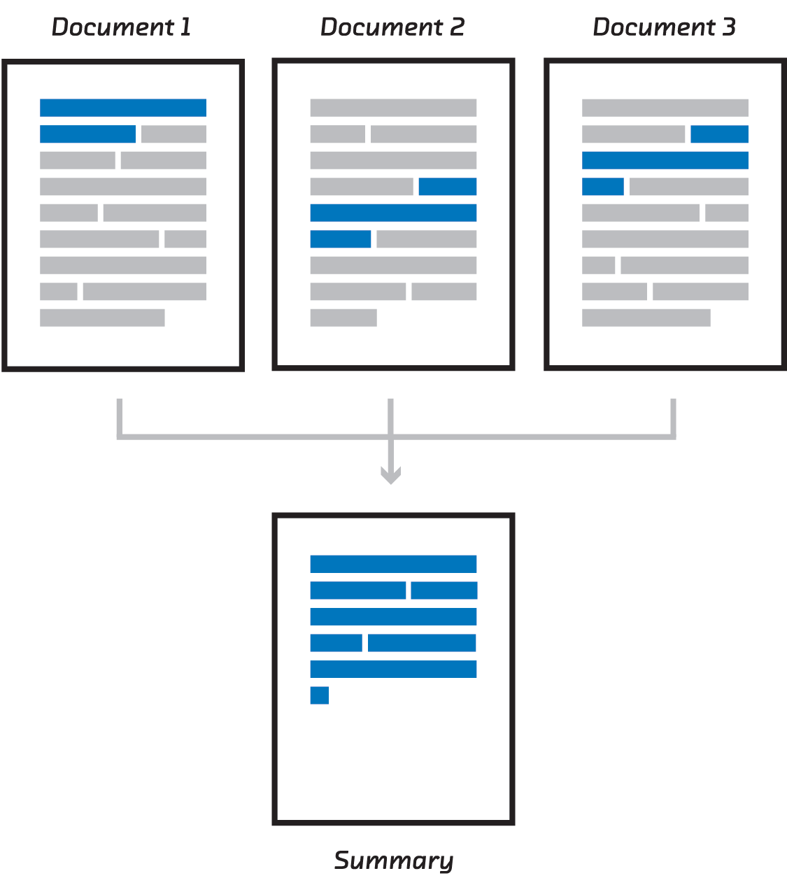
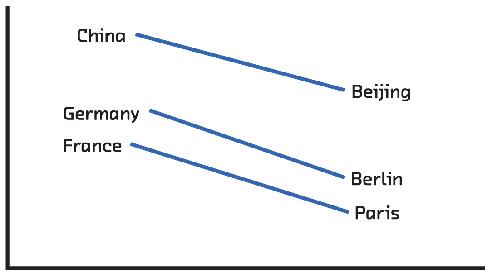

class: center, middle, full-bleed <img src="ff-logo-transparent-bg.png" width="30%"> ## Unlocking unstructured text data with summarization #### Mike Williams • [@mikepqr](http://twitter.com/mikepqr) • <mike@mike.place> • [mike.place/2016/summarization](http://mike.place/2016/summarization) #### Fast Forward Labs • [@fastforwardlabs](https://twitter.com/fastforwardlabs) • [fastforwardlabs.com](http://fastforwardlabs.com) ??? Today I'm going to explain three approaches to summarizing documents. Summarization is intrinsically important task so hopefully you'll find these inherently useful. But step 1 of any good summarization algorithm is also step 1 of any other algorithm dealing with language. In that sense, I'm using summarization as a concrete context in which to address one of the most fundamental topics not just in academic computer science but also in real world products: working with human language on computers. --- class: center, middle, full-bleed, ff04 ??? Why am I talking about this topic? I work at Fast Forward Labs. We do applied research on statistics, machine learning, data science, etc. Today's talk relates to our most recent report on text summarization. How do we choose the topics? We look at things that are cool. We look at things that are commercially relevant. And we look at things that are more possible now than they were a year or two, and will be more possible still in a couple more years. That's the horizon we think about. Today we're going to be talking about a topic that satisfies each of those criteria. You'll see some cool stuff, especially involving recurrent neural networks. I'm going to start the talk in a second by emphasizing the commercial relevance of this problem. And we're going to talk about breakthroughs out of academia that are only a few months old. And we're hiring! If you'd like to work with us in Brooklyn to turn what I'll be showing from prototypes to real world products, let me know! We're looking for a machine learning person and a data engineer! --- class: center, middle <img src="wordcloud.png" width="60%"> ??? So here's an example of document summarization. This is a world cloud someone made about Strata last year. I'm showing it to make two points. Data infrastructure is no longer the bottleneck for most kinds of data analysis. We have robust distributed storage, and sophisticated distributed computation. If you have an algorithm and an AWS budget, anything is possible. The problem is, when it comes to unstructured text, we don't have the algorithms. We've made huge progress in the algorithms that we use to analyse and understand structured quantitative data, but we've made much less progress in automating our understanding of text. This world cloud is in some ways the current state of the art. And it's gibberish. And I think most visualization experts will tell you that. By the way, this is the most recent world cloud I could find on twitter that mentioned Strata. To our credit as a community, this result is from last year. There are none this year that I can find. --- class: center, middle, full-bleed <img src="tweet2.png" width="50%"> ??? So, the word is out: word clouds are bad. Some of the problems with things like word clouds are visualization challenges, that I'm not going to get into today (although I will be speaking about those at plotcon later this year). But many of the more fundamental problems with them are down to the crude, fragile, glib algorithms on which they depend. These algorithms destroy the semantic richness of text. --- class: center, middle, full-bleed ??? We'd like to move away from word clouds, and bag of words. But what do we replace them with? They serve a real need. --- class: center, middle  ??? So first let's back up and define the problem. We want to _extract_ salient excerpts from a document. This is extractive summarization is an incredibly important task, now more than ever. (There's also _abstractive_ summarization, which is a much tougher problem that we're not going to get into today.) --- class: center, middle  ??? Multi-document summarization is a closely related and equally important task. If we have solutions to both these problems, then we have the building blocks of products that give superpowers to people working with doucments. You could quickly get a 30,000ft overview of the dusty pile of documents in the corner of your office or your hard drive. Diving deeper, you could group documents together. So when you find one document you're interested in, you can quickly identify more. You could have the computer summarize a collection in a way that extracts the consensus. And you could automatically summarize a single long document in different ways for different audiences, and different defintions of "important" or "interesting". --- class: left, middle # Luhn’s method of 1958 # <span style="color: #AAAAAA">Topic modelling</span> # <span style="color: #AAAAAA">Recurrent neural networks</span> ??? I'm going to spend most of the talk explaining 3 approaches. The first is one of these fragile, crude algorithms. I'm going to talk about it to set a performance baseline. The second is a little more sophisticated. And the third uses techniques that academics specializing in machine learning are still figuring out. I'll compare their performance and engineering trade-offs. --- class: center, full-bleed <img src="hpluhn.jpg" width="100%"> ??? This is Hans Peter Luhn. He worked at IBM from 1941 until his death in 1968. --- class: center, middle, full-bleed <img src="luhnpaper.png"> ??? We're interested in him because he wrote this paper in 1958. You can find it online pretty easily. It's a seminal paper, and worth reading. But the easiest way to explain the algorithm is to show you a demo. [http://www.fastforwardlabs.com/luhn/](http://www.fastforwardlabs.com/luhn/) --- class: center, full-bleed <img src="luhn1.png" width="80%"> --- class: center, full-bleed --- class: center, full-bleed --- class: center, full-bleed <img src="luhn4.png" width="80%"> --- class: center, full-bleed <img src="luhn5.png" width="80%"> ??? Luhn's method is very simple. And it actually works OK in jargon-heavy documents. It follows a vectorize, score and select framework. It first vectorizes, i.e. turns each sentence into numbers (in this case bag of words). It then scores sentences using an arbitrary but pretty reasonable scoring function: how many of the significant words does each sentence contain. Then it selects high scoring sentences. You could improve the scoring of sentences with other heuristics, like "does this sentence appear early in the document?" Or does it include the words "In summary"?! But these approaches are fragile and domain specific. They need the engineer to understand the documents in order to invent heuristics and assess the quality of the summaries they produce. And there's a more fundamental problem with Luhn's algorithm, which is the vectorization step. Text processing algorithms live or die by the qualitiy of vectorization step with which they begin. Any semantic ideas that don't make it through are lost. It doesn't matter how clever the rest of our algorithm is. Luhn's model has a terrible vectorization step that only allows it to look only for common words. Not common _topics_. If you mention movies 100 times, it won't assign a high score to a sentence containing the word "film". Or the word "director". This brings us to topic modelling. --- class: middle, left # <span style="color: #AAAAAA">Luhn’s method of 1958</span> # Topic modelling # <span style="color: #AAAAAA">Recurrent neural networks</span> ??? In this approach, rather than look for common words in a document, and finding sentences with lots of those, we're going to look for the dominant topics in a document, and find sentences that are themselves dominated by those topics. --- class: center, middle <img src="lda_evaluate.png" width="60%"> ??? But what's a topic, and how can we use computers to find them automatically? That's where topic modeling, and a specific algorithm called Latent Dirichlet Allocation in particular, comes in. In LDA, a document is modeled as being generated by a random process. This is obviously wrong, but bear with me. Each document is made of topics in certain proportions (say 50% politics, 30% computers, 20% genetics). We assume documents are written by someone drawing at random from these distributions: to generate each word, first I choose a topic at random (with probabilities equal to their document proportions). So 50% of the time I choose politics. I then go to the politics bag and choose a word at random. In the politics bag, I'm more likely to get words like Obama and Trump and less likely to get workds like cheesecake or DNA. That all sounds very nice, but we don't have these probability distributions for topics and documents. We just have a stack of documents. We don't know which topics each document contains, and we don't even know what topics exist. --- class: center, middle <img src="lda_topics.png" width="60%"> ??? We first need to run the model in reverse to discover what topics exist in our kinds of documents. --- class: middle ``` *0* food recipes book cookbook make cook cooking eat recipe like *1* fantasy world magic story series witch king harry lord evil *2* town people small place land live home life farm country *3* book john life story read green like man mark great *4* novel characters story reader character plot life lives readers events *5* mystery murder crime detective police case killer mysteries novel series *6* bad man gets hero just way doesn good kill guy *7* science scientific human evolution theory scientists universe physics natural earth *8* society world human man people power evil self life nature *9* philosophy religion religious ideas does philosophical thought work argument islam *10* author does point book fact authors example reader case points *11* love vampire world series romance vampires new really paranormal like *12* life father family wife man mother home woman house husband ... ``` ??? There are lots of public implementations of LDA. I applied one to a corpuse of Amazon book reviews. Here are the first 12 of 100 topics I found. So we've got the first of the puzzle: given a stack of documents, we've learned, which words co-occur. These topics are the lens through which we want to examine any future document. We want to express those documents as a combination of topics, each with proportions. This is a much subtler idea than expressing each document as 4 important words. --- class: middle ### A topic-based multi-document summarization algorithm 1. Train LDA on all products of a certain type (e.g. all the books) 2. Treat all the reviews of a particular product as one document, and infer their topic distribution 3. Infer the topic distribution for each sentence 4. For each topic that dominates the reviews of a product, pick some sentences that are themselves dominated by that topic ??? We're now in a position to reimplement Luhn's algorithm, but with topics instead of words, and applied to several documents instead of one. We're going to apply it to Amazon product reviews. The sentences selected in the last step form a representative sample of the topics that dominate reviews of this document. --- class: center, middle, full-bleed <img src="strain.png" width="60%"> ??? There might be 5000 paragraph long reviews of a popular book. Together these are longer than the book itself, so that's too much information to take in. But the single number (3.8/5 or whatever) is too little. By displaying a representative sample, you can learn about the diversity of ideas expressed in the reviews. The results look like this. This technique is very practical, and like Luhn's method it's unsupervised: it doesn't need example summaries. And topic modeling is generally very useful when analysing trends in a corpus (e.g. customer support). But you can see here one of the limitations of this method: the topics don't come with names. I mentioned "the politics topic" earlier, but it's not that simple. But there are more fundamental problems make the summary less coherent: topic modelling ignores word order, and it necessarily throws away a lot of information by reducing a document to ~100 numbers. --- class: middle, left # <span style="color: #AAAAAA">Luhn’s method of 1958</span> # <span style="color: #AAAAAA">Topic modelling</span> # Recurrent neural networks ??? So we've got two things we want to fix with our approaches so far: retain more meaning for each word or sentence, and retain information about word or sentence order. This brings us to the third and final approach. Exciting breakthroughs on both these problems happened in the last couple of years. In the case of retaining more meaning it's language embeddings like word2vec. And in the case of using order, it's recurrent neural networks. Both of these came out of the deep learning community. --- class: center, middle <img src="rnn-background_skipgram.png" width="100%"> ??? Let's look at language embeddings, and in particular word2vec. word2vec is a supervised machine learning problem. Given the input (a word), can you predict the words must likely to immediately precede and follow it. This seems like a pretty weird problem to care about, but the solution generates something very useful almost incidentally. --- class: middle, center <img src="firth.png"> ### “You shall know a word by the company it keeps” ### — John Firth ??? The intuition behind why we should care comes from a famous quote from the English linguist John Firth. Merely by being able to associate a word with the words that it occurs alongside with, we have acquired something like understanding. Or at least that's the claim. --- class: middle, center ??? The particular algorithm used for word2vec a neural network, so I need to quickly explain what they are. This is a neural network. Although there are some interesting connections with neuroscience, just think of them as computational graphs. They're a series of operations performed on data that allow it to generate predictions. In this case we've got 4 input features (green). These are probably numbers like age, income, whatever. And we've got three outputs (red) which are the thing we want to predict. Maybe it's whether someone with those attributes votes Democrat or Republican or Libertarian. In the middle is where the magic happens. All the inputs are reweighted and mulitplied together and rescaled in hidden layers. If you know linear regression, what's happening is not qualitatively different to that. Just like with linear regression, the difficult bit is figuring out what operations do the best job of making predictions. That's training. But what does this have to do with skipgrams and word2vec. Imagine the input is 30,000 numbers, which is the size of our vocabulary. All of the inputs except one are 0. One is 1, indicating which word in the vocabulary occurred. The output is also 30,000 numbers. Our job is to predict which words come near the input word. So we want the elements of the output to be large for words that are likely to precede or follow our input word. That's word2vec. But there's an interesting byproduct to getting good at this prediction: the hidden purple layer. By ripping the values of these hidden layers for a given input out of the network, we now have vectors we can do other things with rather than just predict context. And given this vector is useful for predicting context (by construction), you could say that intermediate form retains the "meaning" of the word. --- class: center, middle  ??? Here's an example of the value of those vectors. Words that have vectors close to each other turn out to be semantically related, and the directions and distances between word vectors turn out to be semantically significant too. The way you get from "China" to "Beijing" is the same way you get from "Germany" to "Berlin". We set out to predict the context of words, but we've produced word vectors that can be used to solve analogies. This is all kind of vague, but it turns out that coordinates with these properties are essentially encoding the _meaning_ of words into numbers. And numbers are things computers (or machine learning algorithms) can work with. This is a huge deal! --- class: center, middle <img src="rnn-background_skipthoughts.png" width="90%"> ??? And you don't have to stop at words. You can play the same game with sentences, predicting the sentences that come before and after. This, however, requires a lot more data. Our favorite sentence-level embedding is called skip-thoughts and it uses the MovieBook and BookCorpus. This training set has 11,038 books and 11 movie/book pairs. And just like word2vec was able to solve tasks that it wasn't originally meant to, the intermediate representations or embeddings constructed by skipthoughts can solve problems like sentence relatedness and paraphrase detection without ever being told how to. --- class: center, middle <img src="rnn-background_sequential.png" width="40%"> ??? So that's retaining word meaning. What about order? Arguments are built up. Hypotheticals explored. The first and last sentences carry special significance. All this, which helps a human write a summary, is thrown away if you don't retain order. Traditional machine learning struggles here because of a simple almost mundane reason: documents (i.e. the input) are of different lengths. Bag of words and topic modelling are ways around this, but they all throw away order information to squeeze every document into the same size vector. But a couple of years ago, researchers figured out how to chain together neural networks (and crucially, how to train these chains). This allows input or output of arbitrary size to be fed in or out as a sequence with order. These are recurrent neural networks. --- class: middle ### An RNN-based summarization algorithm 1. Find article—summary pairs that use excerpts (thebrowser.com) 2. Score each sentence in the articles on its similarity to the quotes that make up the summary 3. Use skip-thoughts to encode every sentence in the article 4. Train an RNN to predict the scores given the skip-thoughts vector of a sentence 5. Evaluate trained model on new things and use high-scoring sentences as the summary --- class: center, full-bleed <img src="arstechnica.png" width="100%"> ??? And having trained the model we can no predict sentence scores, which means we can construct a summary. Here's the prototype we built, Brief, which is a browser extension. --- class: center, full-bleed <img src="arstechnica-skim.png" width="100%"> ??? It also has skim mode. --- class: center, full-bleed <img src="alphago.png" width="100%"> ??? And here it is on a more substantial article. There are more examples at [http://www.fastforwardlabs.com/brief/](http://www.fastforwardlabs.com/brief/) and the prototype is available to our clients. --- class: center, middle <img src="building_training.png" width="49%"> <img src="building_interpretability.png" width="49%"> ??? We talked about three approaches. The first, Luhn's method, which is a heuristic method, is really explanatory toy. It goes through the same fundamental steps as the others, but it's not a production approach. That said, it requires no training data at all, it's computationally extremely cheap, and the results are interpretable (which is useful when things go wrong). It might be fun for you to try implementing it in Python! LDA requires a training corpus, but no model summaries. It's computationally more expensive, but not a significant engineering challenge. And the results generally make sense. In fact, the topics can be used for lots of other things in addition to summarization. They're intrinsically useful for modelling the evolution of a corpus with time, and they can be used for other downstream tasks like document clustering and bootstrapping article recommendation. The language embedding/RNN approach is, for now, the gold standard of extractive summarization. You need model summaries and computational resources. Training on our 18,000 article set took around 6 hours on a GPU. Despite this, this is the approach we're most excited about. --- class: center, middle <img src="nmt.gif" style="width:100%"> Google NMT, [arxiv.org/abs/1609.08144](http://arxiv.org/abs/1609.08144) ??? That's because it's an approach that can be used any time a computer needs to work with the _meaning_ of language. RNNs and embeddings might be helpful any time your input or your output (or both) are unstructured language. By retaining meaning and order, recurrent networks are being used to make breakthroughs in language tasks like translation. Here's just the latest out of Google earlier this week. Summarization and translation are examples where both input and output are language. But you can also apply this approach to caption creation and video description, where the input is not language. Or search, where the output is document IDs. Or speech transcription or synthesis, where the input or output is audio. The performance on all of these tasks depends on the extent to which the algorithm "understands" language. And the good news is, while neural networks have a tough reputation, the libraries are starting to reach the point where non-specialist engineers can work with them, and connect together (compose) neural networks like lego, for all kinds of input and output. We're really excited about this stuff! --- class: center, middle, full-bleed <img src="ff-logo-transparent-bg.png" width="30%"> ## Unlocking unstructured text data with summarization #### Mike Williams • [@mikepqr](http://twitter.com/mikepqr) • <mike@mike.place> • [mike.place/2016/summarization](http://mike.place/2016/summarization) #### Fast Forward Labs • [@fastforwardlabs](https://twitter.com/fastforwardlabs) • [fastforwardlabs.com](http://fastforwardlabs.com) ??? And just a quick reminder: we're hiring! If you'd like to work with us in Brooklyn to turn these ideas from prototypes to real world products, let me know! We're in Brooklyn and we're looking for a machine learning person and a data engineer!